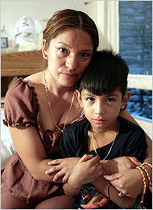
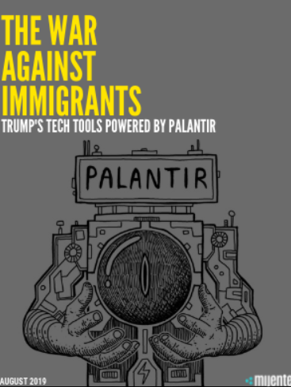
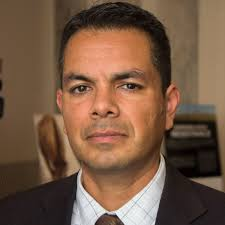

Chicanx Immigration Activism and the Fight for Justice
This website explores Chicanx immigration activism through key figures, historical context, and the lens of racial and social justice. It aims to analyze how activism challenges oppressive systems and reclaims dignity and rights for immigrant communities.
The history of U.S. immigration policy is deeply rooted in systemic racism and exclusion. For the Chicanx community, this has included forced deportations, discriminatory laws, and political scapegoating. Events such as Operation Wetback (1954), which deported over a million Mexican nationals some of which were American citizens, and Proposition 187 (1994), which sought to deny undocumented immigrants public services in California, exemplify structural violence aimed at Latinx communities.
These policies reflect the racialization of citizenship and reinforce national borders as tools of exclusion. According to our course readings, including topics on settler colonialism and racial capitalism, these actions are not isolated, but part of a broader system that uses legal and physical boundaries to control racialized labor and identity. Even to this day during President Trump's second term deportations are taking a toll on the Chicanx community. The arguments used to justify it even today are rooted in racism. Every illegal immigrant is treated like they are violent criminals and there is no due process for them anymore. This forceful removal of people living in America highlights how the struggles the Chicanx community faced in the past continues all the way to the present, despite claims that America is 'fixed' now or a better place.
Elvira Arellano became a national symbol of immigrant rights when she defied a deportation order by taking sanctuary in a Chicago church in 2006. As a single mother and undocumented immigrant from Mexico, her resistance highlighted the vulnerability of mixed-status families. Arellano has since continued her advocacy, speaking at international forums and founding a support group called Familia Latina Unida, which provides legal assistance and community support for undocumented families. Her actions brought attention to sanctuary movements and influenced local policies around deportation deferral and community protection. Her courageous act of defiance in 2006 laid the foundations for sanctuary cities and played a critical role in developing safer places for people trying to immigrate to the United States. Her fight for immigration rights stil carry weight today as the problems are prevelant now more than ever.
Mijente is a decentralized, Latinx-led political hub founded in 2015 that brings together grassroots activists, digital strategists, and cultural workers to build power against criminalization and deportation. One of their major contributions is the campaign against tech companies like Palantir, which contracts with ICE to manage surveillance and data collection on immigrants. Their 2018 #NoTechforICE campaign exposed corporate complicity and empowered communities to demand ethical standards in tech procurement. Mijente also launched the “Fuera Trump” and “Gente4Abrams” campaigns, linking immigration policy to broader racial justice and electoral engagement strategies. Their model blends street protest with digital disruption, making them a major force in intersectional movement building.
Pedro Rios is the Director of the American Friends Service Committee’s U.S.-Mexico Border Program, a Quaker organization, and has worked at the San Diego border for over two decades. He coordinates the Southern Border Communities Coalition and advocates for migrant rights through public education, media campaigns, and border patrol accountability. Rios helped develop community patrols to monitor abuse by border agents and document cases of excessive force. He also organizes border crossing vigils and binational forums that bring together activists from both sides of the border to demand demilitarization. Rios's work is deeply grounded in community empowerment and nonviolent resistance, reflecting Quaker values of peace and justice applied in a Chicanx context.
The activists highlighted here reflect the core themes of this course. Their work demonstrates how race, national origin, gender, and immigration status intersect under systems of oppression. These figures do more than react to injustices they face, they propose alternative frameworks of sovereignty, community care, and solidarity.
Through the lens of Chicanx Studies, immigration is not just a legal issue but a racial and colonial structure. As we learned in our discussions of racial formation and border imperialism, state power uses laws, borders, and surveillance to maintain a racial hierarchy. These activists resist by reshaping narratives and building coalitions for justice. Throughout the course we have seen historical examples of how state and federal government uses their litigation power to pass by human rights to push their own political agendas. During Trump's first term, people crossing the border trying to better their life were kept in cages. Now in Trump's second term people like Kilmer Abrego Garcia are being deported straight to prisons in a country where they are not even from. Despite the courts telling Trump's administration that they need to get him back and give him due process, the situation is actively being ignored and is being used as political point to further fuel the fire against the Chicanx community to push for even more deportations. Situations like these show how the need for figures like Elvira Arellano and Pedro Rios is at an all time high. Organizations like Mijente are recruiting and holding events to fight back against the injustices of today. The importance of these figures and organizations cannot be overstated in a day and age where a Presidential Administration is ignoring laws they created to push racist ideologies. This is directly in relation with our course as we have analyzed and read many pieces about the history of practices being used against the Chicanx people, reading and understanding these pieces help the cause to fight for those mistakes to not be repeated. As a society we need to stand up against injustices to ensure that human rights are not violated just because of some political points.
Chicanx immigration activism is more important now than ever. This movement isn’t just about the past; it’s about responding to what’s happening right now. Throughout this course, we’ve seen how systems like immigration enforcement are often used as tools to target and control marginalized communities, especially those based on race, immigration status, and national origin. The case of Kilmer Abrego Garcia is just one example. He was deported to a country he wasn’t even from and sent straight to prison, despite the courts saying he should have been given due process. His story shows how the government sometimes ignores its own rules just to make a political point. It’s part of a pattern we’ve seen in class where laws and policies are used to push anti-immigrant and racist agendas. This is why people like Elvira Arellano and Pedro Rios matter. They don’t just speak out. They organize, protect, and fight for justice. Groups like Mijente give communities the tools to resist unfair treatment and push back in powerful ways. Their work ties directly to what we’ve learned about sovereignty, solidarity, and racial justice. As students, we can’t ignore what we’ve learned. These aren’t just ideas in a textbook. They’re real, and they’re happening now. It’s up to us to stay informed, call out injustice, and support movements that are fighting for human rights. If we stay silent, the cycle continues. But if we act, we can help create a future where dignity and fairness are possible for everyone.